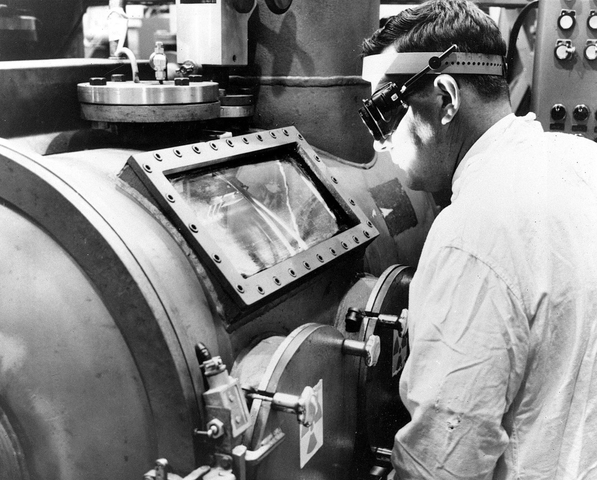
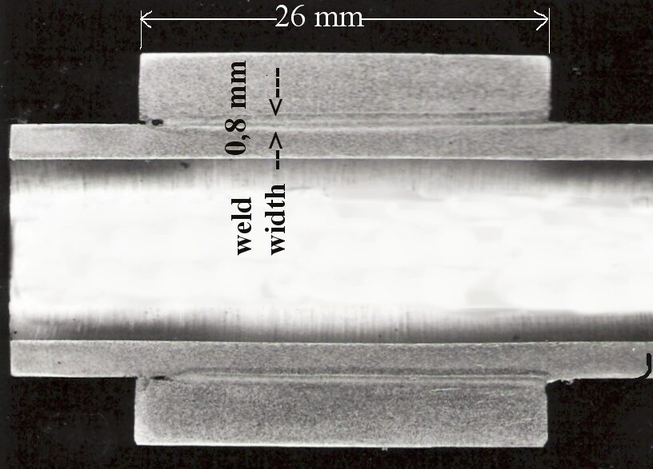

Soldadura por haz de electrones · EBW
¿Y si pudiéramos soldar con electrones?
J. Gabriel Franco · Juan Fernando Sarmiento
✋ Levanten la mano si creen que se puede
¿Qué tan rápido va un electrón aquí?
0 km/s
≈ 63 % de la velocidad de la luz
a 150 000 voltios

Origen
1957–58
Francia y Alemania
Nace para la industria nuclear
1 / 3
Calentar
Cátodo de tungsteno a más de 2 000 °C
Los electrones “hierven” y salen del metal
2 / 3
Acelerar
0 kV
entre 30 y 150 kV de diferencia de potencial
3 / 3
Enfocar
Bobinas magnéticas concentran el haz en un punto de menos de 1 mm
Otras bobinas lo mueven sin tocar nada
Con aire
Los electrones chocan con las moléculas y se dispersan
En vacío
Llegan enteros a la pieza · ≈ 10⁻⁴ mbar
Pregunta
¿Por qué tiene que ser en vacío?
6
Así se ve en la industria
El cañón de electrones
Columna de alto voltaje montada sobre la cámara de vacío
Keyhole
≈ 10⁷ W/cm²
El metal se vaporiza y el haz abre un túnel
El metal fundido lo cierra detrás
Una pasada.
Un cordón.
Un cordón.
La pieza gira bajo el haz y la unión se cierra en una vuelta
Sigue Juan Fernando →

Corte de un cordón real
26 mm
de profundidad
0,8 mm
de ancho
Relación ≈ 30 : 1
Arco
Bisel y varias pasadas · 0
EBW
Junta a tope · 1 pasada
Pregunta
¿Cuántas pasadas para unir una placa gruesa?
6
Más potencia,
más profundo
más profundo
De fundir la superficie a atravesar la pieza
Zona afectada mínima
Poca distorsión
Sin material de aporte
Los metales “difíciles”
El vacío protege a los reactivos y la energía alcanza para los refractarios
TiTitanio
NiSuperaleaciones
CuCobre
AlAluminio
WTungsteno
MoMolibdeno
TaTántalo
ZrCirconio
+ uniones disímiles: cobre con acero
¿Dónde se usa?
Aeroespacial
Turbinas y motores de titanio y superaleaciones
Nuclear
Componentes de reactores y combustible
Automotriz
Engranajes y piezas de transmisión
Médica
Implantes y dispositivos de titanio
El costo de tanta precisión
Todo pasa dentro de una cámara
Equipo muy costoso
Tamaño de pieza limitado
Minutos para hacer vacío
Junta muy precisa · ≈ 0,1 mm
Rayos X
Al frenar en el metal, el electrón emite radiación
Por eso la cámara lleva blindaje de plomo
Pregunta
¿Qué más produce un electrón cuando frena de golpe?
6
EBW frente a láser y TIG
| EBW | Láser | TIG | |
|---|---|---|---|
| Profundidad por pasada | Muy alta | Alta | Baja |
| Ambiente | Vacío | Aire con gas | Gas inerte |
| Cobre y aluminio | Sin problema | Difícil: reflejan | Bien |
| Velocidad | Alta | Alta | Baja |
| Costo del equipo | Muy alto | Alto | Bajo |
Futuro
Imprimir metal con electrones
Fusión de lecho de polvo, capa por capa (EBM)
Piezas de titanio para aviones e implantes
Entonces…
¿soldarían con electrones?
¿soldarían con electrones?
Gracias · J. Gabriel Franco · Juan Fernando Sarmiento
¿Preguntas?
❚❚ En pausa · espacio para seguir
Soldadura por haz de electrones
20 escenas · 15 segundos cada una · 5 minutos
Espacio: pausa · ← →: cambiar escena · P: pantalla completa